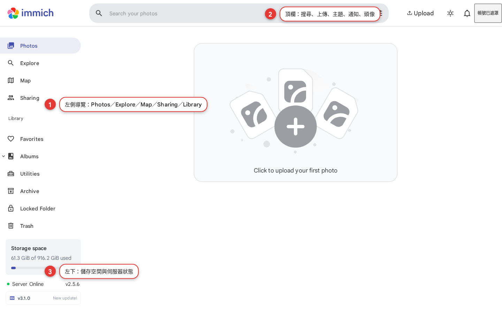

First open: getting to know the screen
The first thing to do after login is to get to know the screen of this photo library: the top bar, the sidebar on the left and the content area in the middle. By the end of this chapter, you'll know where every button is and what each area handles, so you'll stop getting lost.
Learn the map before you organize photos
The Immich interface is clean, but the first time you open it, it is easy to feel that you "cannot find where anything is". This chapter splits the screen into three parts and explains each one: the top bar, the sidebar and the content area in the middle. Once you can read it, uploading, organizing and searching later on will all go much more smoothly.
A mental model of the three screen areas
| Area | Where it is | What it handles |
|---|---|---|
| Top bar | The strip across the top of the screen | Search, upload, the theme toggle, notifications and your account avatar |
| Sidebar | The column down the left of the screen | Photos, Explore, Map, Sharing and the Library group |
| Content area | The largest area, in the middle | The actual content: the photo grid, albums, search results and so on |
Six steps through the main navigation
Start with the top bar
Along the top are the search box "Search your photos", the Upload button on the right, the theme toggle, the notification bell, and your avatar at the far right.
Look at "Photos" in the sidebar
This is the main timeline (your main photo grid), and it is where you land by default after login. Chapter 5 goes into detail.
Look at "Explore"
Search, people, places and the other discovery features are all collected here. You'll use it in Chapter 7.
Look at "Map" and "Sharing"
Map is the map view (photos with location data are pinned on the map); Sharing is where the albums you have shared live.
Look at the "Library" group
Under it you'll find Favorites, Albums, Utilities (tools, including people and places), Archive, Locked Folder and Trash.
Check the storage status at the bottom left
"Storage space" shows used / total capacity, for example "61.3 GiB of 916.2 GiB used"; below it, "Server Online" and the version number show the server status.

Common first-open pitfalls
The screen is blank after login
Refresh once. If it is still blank, the server may be busy or the front end slow to load; wait a moment and try again, or switch to a private (incognito) window.
The sidebar has disappeared
It may have been collapsed: look for the "Collapse / Expand" button and expand it, or make the window wider.
The photo grid says "Click to upload your first photo"
This is the normal message for an empty photo library; it means there are no photos yet. See Chapter 4 for how to upload.
A "NEW VERSION AVAILABLE" notice appears
It means the server is running an older version than the latest official release. This is a reminder for admins; as a regular user, just click "Acknowledge" to dismiss it. Chapter 12 covers updates.
First open FAQ
Why do I land on the Photos page right after login?
What are the items under "Library" in the sidebar?
What is Storage space at the bottom left?
What do "Server Online" and the version number mean?
What is the bell in the top right for?
Official sources
| Source | What to verify |
|---|---|
| Immich docs: Introduction | Interface and feature overview |
| Immich docs: Search | Explore and the search features |